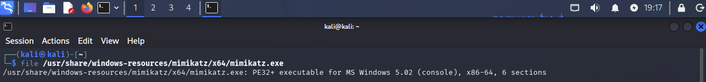
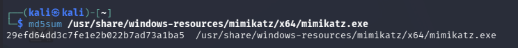
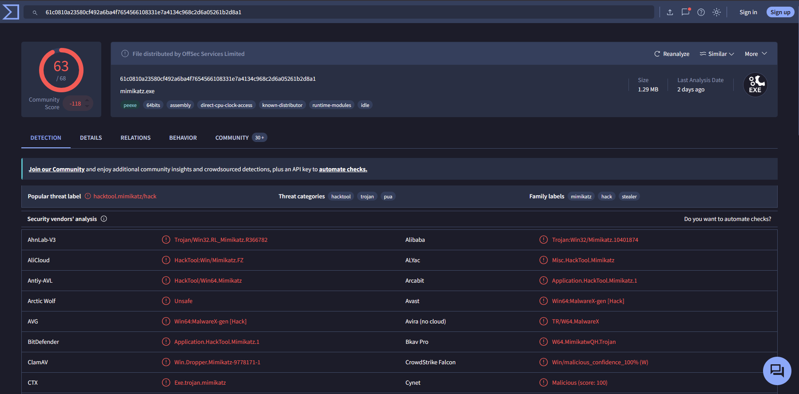
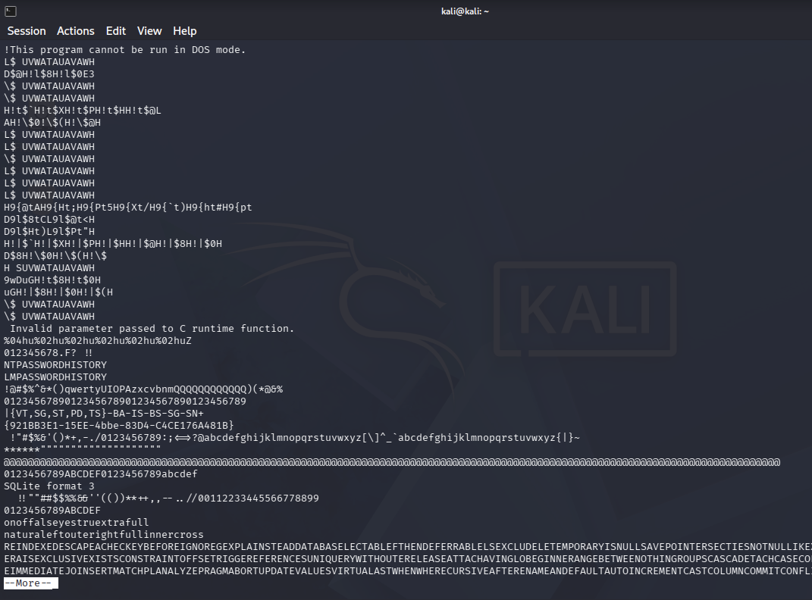
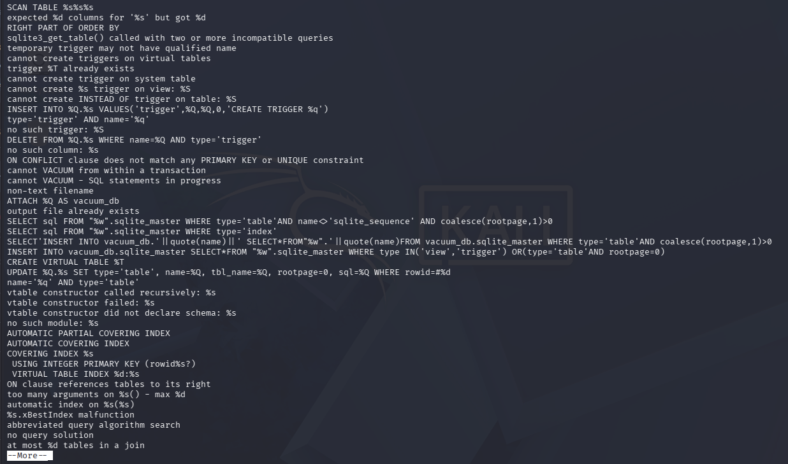
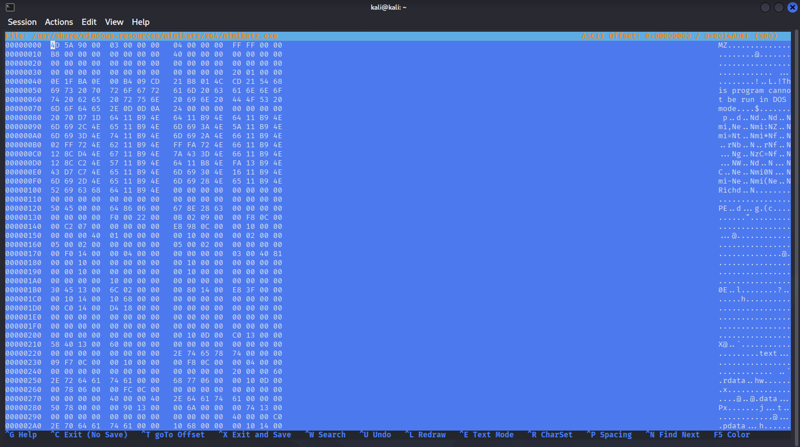
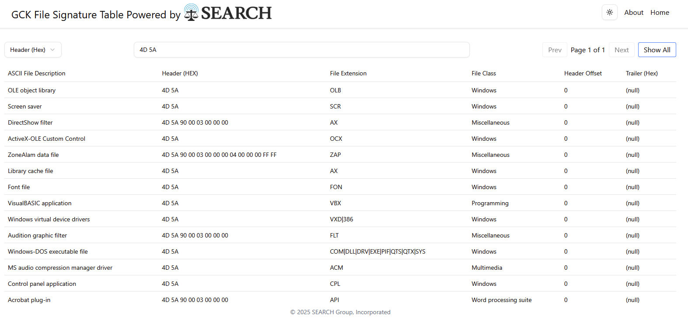

This lab looks at the Mimikatz sample built into Metasploit on Kali, using basic file analysis tools instead of running the file.
3. File Command
The file command was run against the Mimikatz executable to check what kind of file it is.

The output identifies it as a PE32+ executable for MS Windows 5.02 (console), x86-64, with 6 sections.
4. MD5 Hash
The md5sum command was run against the same file to get its hash.

The hash is 29efd64dd3c7fe1e2b022b7ad73a1ba5.
6. VirusTotal
The hash was searched on VirusTotal to check the file's reputation.

63 out of 68 security vendors flagged the file. The popular threat label is hacktool.mimikatz/hack, with family labels of mimikatz, hack, and stealer.
7. Strings Output
The strings command was run with a minimum length of 15 characters to pull readable text out of the file.

This part of the output shows NTPASSWORDHISTORY and LMPASSWORDHISTORY, which relate to what Mimikatz is built to pull from a system.

Further down, the output shows Windows credential and vault API calls such as SamrCloseHandle, SamIRetrievePrimaryCredentials, and VaultEnumerateItems, along with the string RSA PRIVATE KEY. These calls line up with how Mimikatz pulls credentials from a system.
8. Hex Editor
The hexeditor command was used to look at the file's magic number, which is the first couple bytes of a file that identify its type.

The first two bytes are 4D 5A, which matches the MZ text shown in the ASCII column next to it.
9. Gary Kessler File Signature Match
The 4D 5A signature was looked up on the Gary Kessler file signature table to confirm the file type.

The matching entry is Windows-DOS executable file, with file extensions COM, DLL, DRV, EXE, PIF, QTS, QTX, and SYS. This confirms the file is a Windows executable, matching what the file command showed earlier.